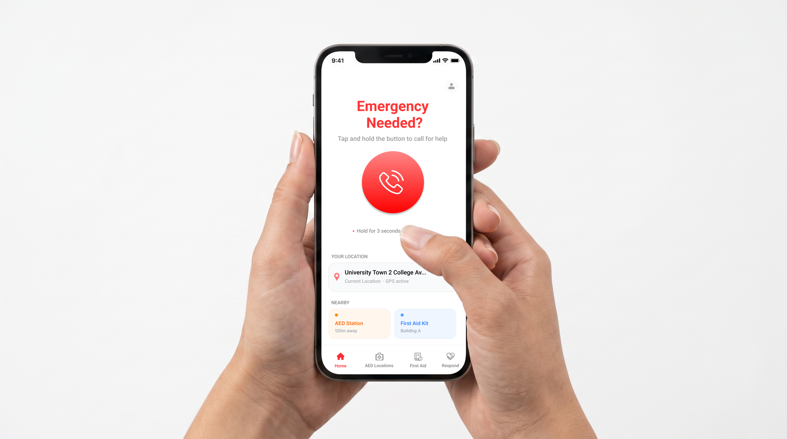
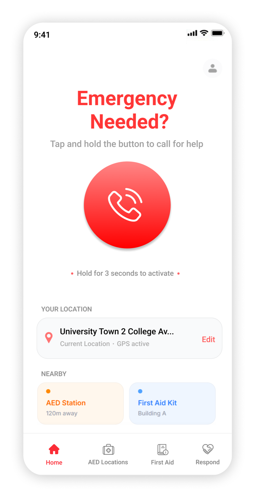

Pulse: Emergency Response App
An app that turns any bystander into a responder. One tap calls for help. AI assists the call live. Illustrated steps guide CPR. Nearby users get alerted to bring an AED. Help arrives from every direction, not just the ambulance.

Bystanders freeze when it matters most
When someone collapses in public, survival depends on the first few minutes, long before an ambulance can arrive. Most bystanders freeze. They do not know who to call, what to do while help is on the way, or where the nearest AED is. Pulse turns any bystander into a capable first responder within seconds, using the phone already in their hand. On the other end of that call, an emergency dispatcher coordinates the response through a companion platform, Pulse Dispatch.
Sources: American Heart Association: CPR Facts & Stats, heart.org (2024), Singapore Heart Foundation: OHCA Statistics
Understanding the seconds that matter
Research began with a quick comparison against MyResponder and SGSecure, the two apps Singapore already uses for emergencies. Both looked loud and packed with information on the very first screen. Conversations with friends, family, and the public, reached partly through social media, surfaced the real problem: people did not know how to start, or what to do once they had.
Interview Guide (9 Questions)
- Have you ever witnessed or been present during a medical emergency, such as a collapse, cardiac arrest, or serious injury?
- Have you used MyResponder or SGSecure before this interview? If so, when and why did you use it?
- Please describe what you would actually do in the first ten seconds of seeing someone collapse.
- Please be honest. Would you panic, freeze, or act? Why do you think that is the case?
- Please open MyResponder or SGSecure now. What is the first thing you notice?
- Was there ever a moment using it where you felt unsure what to do next?
- After you have called for help, what do you do while you wait?
- Do you know any first aid? Would you attempt it on a stranger?
- Would you know where the nearest AED is right now, without checking?
- What is the one thing that would have made you feel more confident in that moment?
Screens from MyResponder and SGSecure, existing competitor apps benchmarked in this research.


- The dashboard opens with close to eight data modules at once: responder counts, case totals, a monthly bar chart, three tabs, and a live map. Nothing tells a panicked user which one matters right now.
- Five bottom navigation icons carry equal visual weight. The actual emergency call button does not read as more urgent than Camera or AED sitting right next to it.
- Reporting an incident means scrolling through a form: a location field, optional location details, then a separate contact section for name, phone number, and email. More fields to parse before help is even requested.
- Statistics like "97,885 registered responders" and monthly case charts are built for someone auditing the system after the fact, not someone who witnessed an emergency thirty seconds ago and just opened the app.
- Together, this is cognitive overload by design. Too much information competes for attention, and the reporting flow has more steps than the moment can afford. That is the opposite of the single, streamlined action Pulse's research pointed toward.
Synthesis
Eighteen conversations clustered into four recurring patterns. Together they pointed to one opportunity space: not the moment of noticing danger, and not the arrival of help, but the stretch in between, reporting the incident and giving first aid while waiting. That is where Pulse's SOS flow, live AI call assistance, and CPR guidance are aimed.
Two very different mental states, one moment
The same five minutes hold two very different people: the one reporting the incident, and a stranger nearby who is willing to help but has not been asked yet. Both surfaced repeatedly in conversations with friends, family, and the public, regardless of whether they had used an emergency app before.
First on the scene
- Adrenaline is high, thinking narrows to one track
- Does not know how to start: which app, which button, which step
- Freezes after reporting: unsure whether to wait, move the person, or begin first aid
- Needs constant reassurance that help is actually coming
Willing, but needs direction
- Wants to help but does not realize they are needed
- Needs a specific, small task, not a general alert
- Needs confidence they will not make things worse
- Needs a clear, short route, not just a notification
One incident, start to finish
This map exists to answer one question: at which point are people under the most stress, and where can Pulse actually step in? Mapping a single incident from start to finish showed that stress did not spike and fade. It stayed high through reporting the incident and through the first aid wait that followed. That stretch, not the initial shock or the moment help arrives, became the opportunity space for this project.
Notices danger
Bystander sees someone whose life is in danger.
Reports the incident
Taps the SOS button. One unmistakable action, no menus, no hesitation.
AI listens on the call
Suggests next steps in real time while help is being contacted.
Starts first aid
CPR illustrations guide direct care through the longest, most uncertain minutes.
Nearby users notified
Someone closer to an AED is guided to bring it to the scene.
Responders arrive
Reporter hands off care; incident resolves.
Designing for a panicked thumb
The SOS button is not just red and oversized. Its position is deliberate. On a phone held in one hand, the thumb's natural resting arc lands roughly in the middle of the screen, slightly above center, not down at the bottom edge and not up near the header. That is exactly where the button sits, because it carries the single highest priority action on the screen, and nothing else is allowed to compete with it for that spot.

Pulse's home screen. Original UI, designed for this project.
Natural thumb reach zone. With a relaxed grip in one hand, the thumb sweeps through the middle of the screen, slightly above center, not the bottom edge and not the top. That arc is marked by the dashed line and shaded zone.
Highest priority action, easiest reach. The SOS button sits at the center of that zone. It is the one action every other element on the screen defers to, so it gets the position that costs the panicked thumb the least effort.
Soft red gradient. Light at the top edge and deeper red toward the bottom give the button a raised, pressable surface. It is a visual cue to push, reinforcing the hold to activate instruction beneath it.
An earlier version placed the button lower, closer to the bottom edge, for easier reach with one hand on larger phones. It tested worse. Sitting near the bottom, it read as secondary, almost below the fold on smaller screens. Centering it in the natural reach zone kept it reachable without undercutting its priority as the first thing the eye and thumb both land on.
The AI listens, then tells you exactly what to do
While the call is connected, the AI transcribes the conversation in the background and listens for keywords: cardiac arrest, heart attack, not breathing. The moment it catches one, it surfaces the relevant guide as a tappable card, so the responder never has to search for help while still on the line with dispatch.

Call status stays visible. The On Call pill and the 995 status card never scroll away. The responder can always see they are still connected, even while reading a guide two taps deep.
Nearby resources, always present. AED Station and First Aid Kit cards stay above the fold regardless of what the AI recommends. Location does not get buried under suggestions.
AI recommended actions, ranked. Recommended Actions only appears once the AI has caught a relevant keyword. CPR Guide is listed first, the higher urgency match for this call.
Call controls never move. Video, end call, and mute stay fixed at the bottom on every guide screen, so muting or ending the call never requires backing out of a guide first.
In this scenario, dispatch tells the responder to begin CPR. They tap the CPR Guide card and move straight into illustrated steps, without ever leaving the call.


- Guides open as cards inside the call screen, not as interruptions. The AI never takes over the screen or pauses the call to push a suggestion.
- Someone who already knows CPR can skim the headers alone, phrases like Open the Airways or Check for Breathing, while someone who does not can drop into the line beneath for guidance.
- Illustrations are simple line art, not photos, to keep visual noise low under stress and avoid anything that could read as graphic.
- The one technique detail most likely to be done wrong, arm position during compressions, gets its own solid red callout, visually heavier than the regular instruction text, instead of being just another line of body copy.
A notification, then a choice
When Pulse detects a nearby emergency, everyone within close proximity, not just the person who reported it, gets a push notification. Accepting it drops the secondary responder straight into what is needed: what is happening, where, and the nearest AED to bring, without asking them to dig for any of it.
- Wayfinding to the AED and then to the accident scene hands off to the phone's own native maps app, Apple Maps on iOS or Google Maps on Android, instead of a custom map built into Pulse.
- The secondary responder is already fluent in their own phone's navigation: live traffic, voice guidance, rerouting. Rebuilding a weaker version of that inside Pulse would only slow them down at the exact moment speed matters most.
- Pulse's own map view stays minimal, just the AED pin and the incident pin, and steps aside once the responder taps Navigate, rather than competing with tools they already trust.
One incident, four people, two very different screens
The screens so far tell half the story. Behind every Pulse report are four people, not one: the immediate responder reporting and giving first aid, the emergency dispatcher on a different screen entirely, the secondary responder rushing an AED to the scene, and the ambulance crew taking over on arrival. This section maps how those four people, and their two interfaces, fit into a single incident.
Who is involved
Two apps, opposite jobs
The immediate and secondary responder need the interface to disappear. The dispatcher needs it to show everything at once. Pulse's mobile app and its companion, Pulse Dispatch, are designed as two ends of the same system rather than two unrelated products.
Mobile App
Immediate & Secondary Responder
- One large action per screen
- Big touch targets, minimal text
- Guided, one step at a time
- Designed for a panicked thumb
Desktop App
Emergency Dispatcher · Pulse Dispatch
- Multiple live calls at once
- Map, transcript & responder status side by side
- Dense, information first
- Built for fast triage under load
How everything connects
Put together, the immediate and secondary responder's screens form one continuous flow, not two separate apps. The diagram below traces a single incident start to finish: one path for the person reporting and giving first aid, a second path that opens automatically for whoever is closest with an AED, and a single point where both converge back at the scene.
Testing under simulated stress
Run as a moderated usability study with 9 students recruited across two university courses, a mix of people who had completed a first aid module and people who had not. Each participant was handed a scenario card and a working Figma prototype, then asked to think aloud while completing three tasks: report an incident, follow the CPR guide, and find the nearest AED. A visible countdown timer and a low ambient noise track ran in the background of every session, a simple, low cost way to approximate time pressure without simulating real danger.


System Usability Scale score moved from 58, borderline OK, to 84, solidly in excellent territory. The two biggest contributors: replacing the wireframe's three tap SOS confirmation with a single hold to activate button, and moving the CPR guide's detailed instructions to sit directly below a short header instead of behind a separate Learn More tap.
What this system makes possible
Summary
Pulse started from a simple observation. The ambulance was never the delay. The moment before anyone acted was. Research with eighteen people in Singapore, benchmarked against MyResponder and SGSecure, pointed to a specific opportunity space: the stretch between reporting an incident and getting through the first aid wait, not the initial shock or the moment help finally arrives. Everything in the final design traces back to that. A home screen built around a single SOS button within thumb's reach. A live call that listens for medical keywords and surfaces CPR or AED guidance without the responder ever leaving it. A second flow that quietly recruits whoever is closest with an AED, guided there by their own phone's native maps. On the other end of the same incident sits Pulse Dispatch, the desktop counterpart built for the emergency dispatcher managing multiple calls at once. Proof that the mobile app's simplicity and the console's density are two expressions of one system, not two separate products.
A moderated usability study with nine university students backed the direction: time to first tap on the SOS button dropped from 6.4 to 2.1 seconds, task success on the AED wayfinding flow rose from 61% to 94%, and the System Usability Scale score moved from a borderline 58 to an excellent 84 between prototype rounds.
What Comes Next
- The AI listener is still a UX exploration, not a working system. The actual keyword detection and triage algorithm behind it would need real development with clinicians and NLP engineers before it could be trusted on a live call.
- Every screen in this case study is English only, which does not reflect Singapore. Support for multiple languages, Mandarin, Malay, and Tamil at minimum, is close to a requirement here, not a bonus.
- The entire interface only exists in a light theme. A dark mode would matter in exactly the low light, nighttime scenarios this app is designed for.
- The guidance library only covers cardiac emergencies right now. I would want to expand it to other situations, starting with fire: where the nearest extinguisher is, and how to use it, so Pulse is useful beyond one kind of emergency.